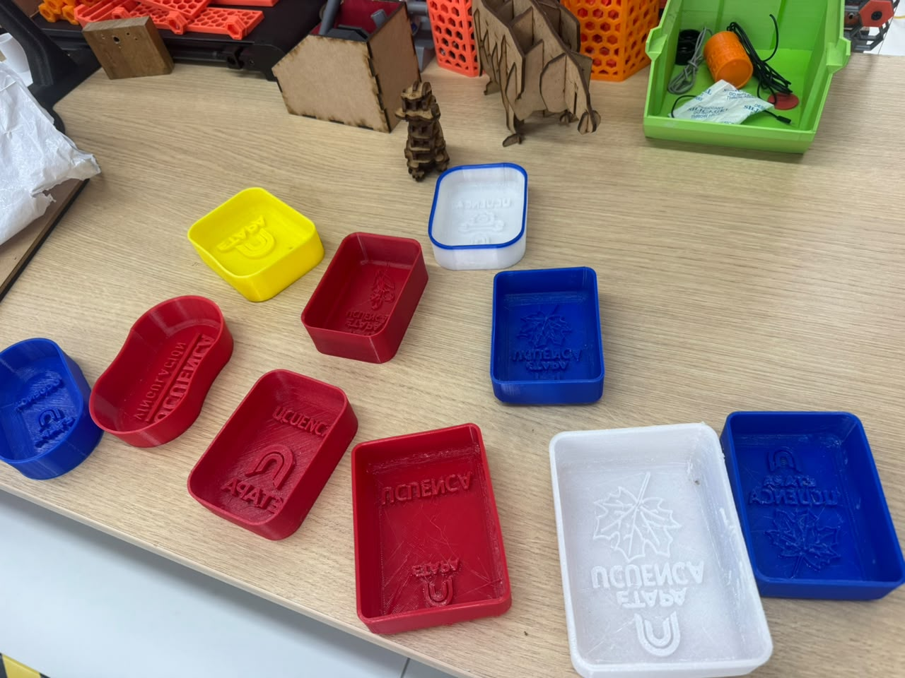
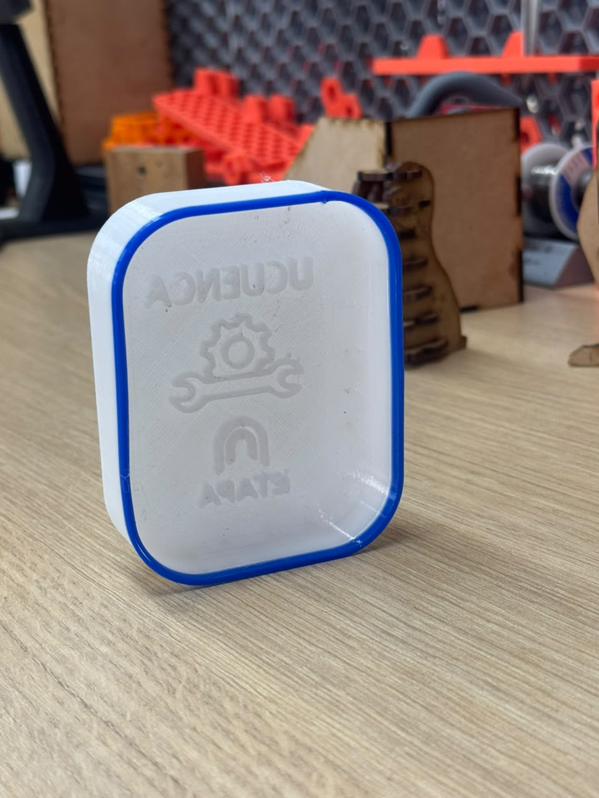

Conocer las prácticas actuales
Diagnosticar el manejo y la disposición del aceite usado mediante encuestas en establecimientos gastronómicos de Cuenca.
PROYECTO 03 / AMBIENTE Y COMUNIDAD
Reutilización del aceite doméstico en jabonería artesanal
Conectar la gestión de residuos, el conocimiento científico y el diseño para generar valor social en Cuenca.
Descubre el proyecto ↓
Marzo 2026 – febrero 2028
01 / EL PROPÓSITO
Reutilizar el aceite de cocina y fortalecer la corresponsabilidad ambiental entre universidad y comunidad.
El proyecto propone transformar el aceite usado de cocina en jabón artesanal en barra destinado al lavado de prendas, con el propósito de contribuir al cuidado de las cuencas hidrográficas y promover prácticas responsables de gestión de residuos domésticos.
La iniciativa articula a la Universidad de Cuenca y ETAPA con restaurantes del biocorredor urbano de los ríos Tomebamba, Yanuncay y Machángara. Contempla la recolección del aceite en centros de acopio, investigación experimental, producción y formación ambiental.
Su enfoque interdisciplinario integra Bioquímica y Farmacia, Ingeniería Química, Ingeniería Ambiental e Ingeniería Industrial de la Facultad de Ciencias Químicas.
Las cifras corresponden al alcance y las metas previstas en la formulación. El registro fotográfico compartido documenta los moldes del proyecto.
02 / LÍNEAS DE TRABAJO
Cuatro líneas previstas para conectar la reutilización del aceite con la formación y el trabajo comunitario.
Diagnosticar el manejo y la disposición del aceite usado mediante encuestas en establecimientos gastronómicos de Cuenca.
Desarrollar y validar una formulación de jabón artesanal en barra a partir de aceite usado de cocina.
Integrar criterios de eficiencia, seguridad y sostenibilidad en la producción de jabón destinado al lavado de prendas.
Capacitar al personal de restaurantes en el manejo del aceite y los efectos de su disposición inadecuada en el agua.

03 / EL APORTE DEL FABLAB
El diseño CAD y el prototipado permiten explorar formas y detalles de moldes funcionales para la jabonería artesanal.
Las fotografías muestran piezas con distintos formatos, colores y elementos gráficos en relieve: una conexión entre el diseño de producto y el proceso de fabricación.
Explora los moldes ↓04 / A QUIÉNES SE DIRIGE
Población prevista de escuelas en zonas marginales que recibiría el jabón para lavado de prendas.
Representantes de 50 restaurantes considerados para diagnóstico y capacitación en el manejo del aceite usado.
La formulación contempla un beneficio indirecto para la ciudad a través del cuidado de sus recursos hídricos.
05 / QUIÉNES LO IMPULSAN
Facultad de Ciencias Químicas
Universidad de Cuenca
Universidad de Cuenca + ETAPA
Equipo, período y alcance según el documento de formulación del proyecto.
06 / REGISTRO DEL PROYECTO
Tres fotografías de los moldes del proyecto.
Selecciona una imagen para ampliarla.
Fotografías proporcionadas para el proyecto de jabonería artesanal.
El conocimiento se fortalece cuando se comparte.
Volver a Projects Hub ↗